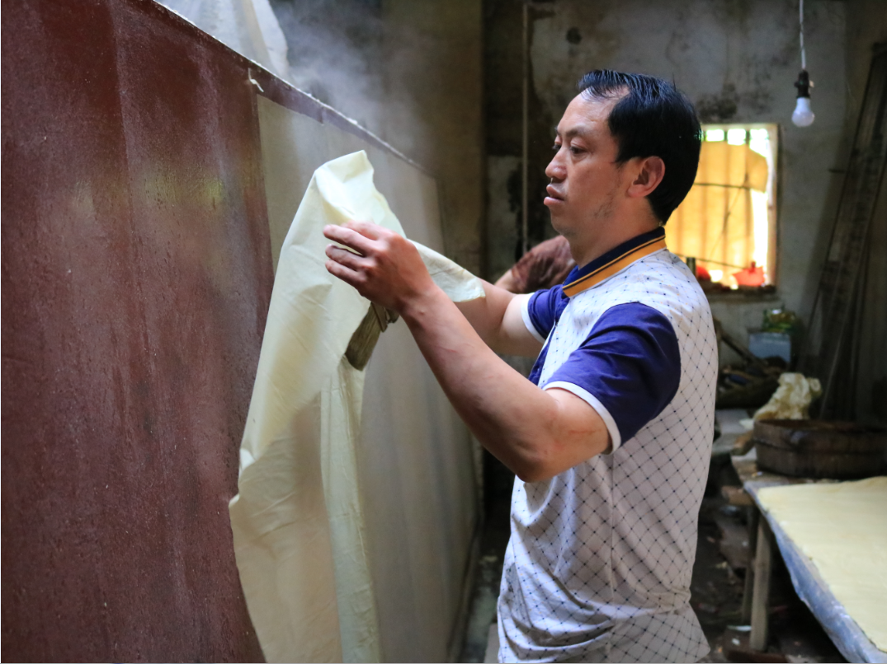
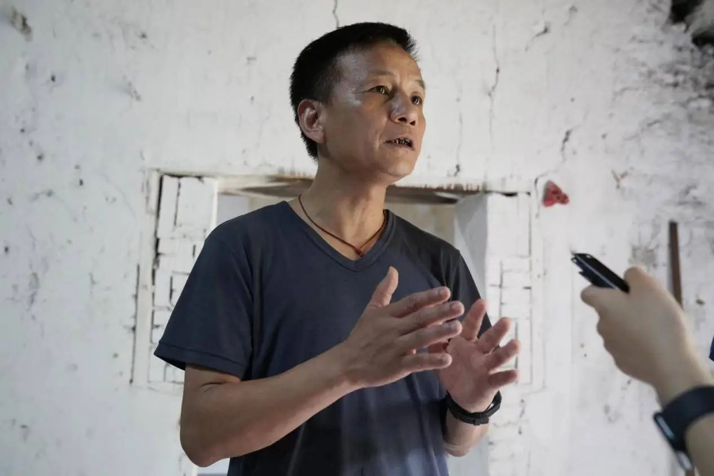

• 2021年重建茜坑胡家纸寮，恢复古法造纸生产线，年产能约350刀。 • 创立“生产-教学-展示”三位一体模式，通过“师徒制”培养6名年轻技艺传承人。 • 2022年纸寮获评“市级非遗传习所”，年接待研学团队50余批次。 • 完整复原“砍竹-浸塘-踏料-抄纸-焙纸”核心工序，抢救记录多项濒危技艺细节。

• 三明学院前教授，带领团队修复清代光绪纸厂，成立玉扣纸文化发展有限公司。 • 与复旦大学、牛津大学博德利图书馆合作，研发古籍修复专用玉扣纸。 • 2024年成功将宁化玉扣纸应用于《明福河陈心斋刻本》古籍重印，获国际认可。 • 挖掘造纸工艺与自然节气的关联，提炼“匠人精神”当代价值。
玉扣纸选用新生未开叶竹麻，历经腌泡、踏料、抄纸、焙纸等核心工序，每一张纸都是时光的沉淀。
01 踏料
脚踩竹麻，纤维软化
02 牵纸
湿纸分张，轻巧揭起
03 焙纸
火墙烘干，纸面平滑
04 抄纸
竹帘荡料，纸浆成膜
05 榨纸
压榨去水，紧实纸砖
06 裁纸
修边整形，成品如玉
泛黄古籍、老纸样、历代工具——跨越千年的实物见证，数字技术让历史触手可及。